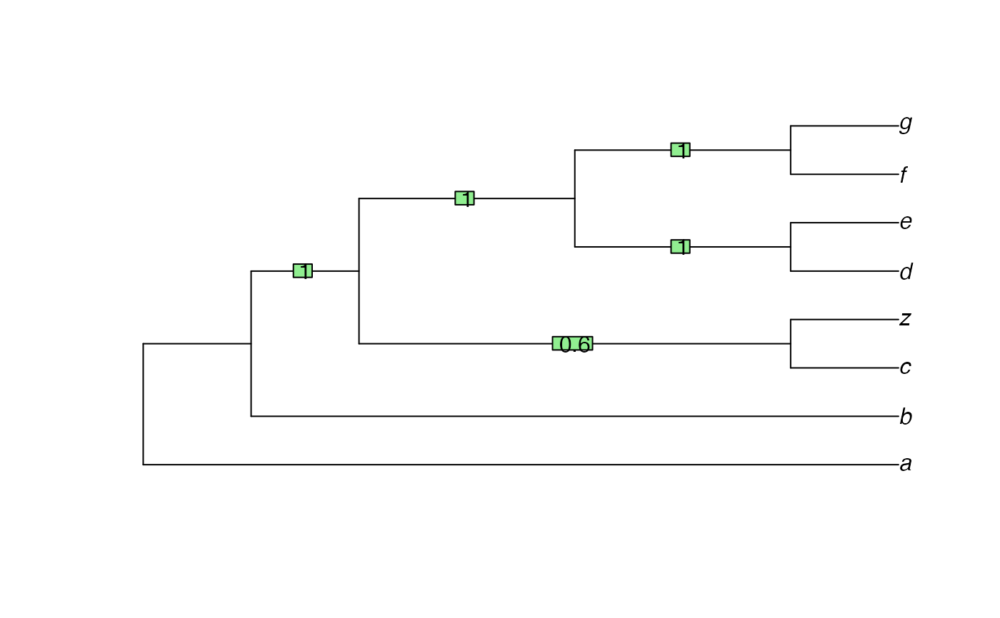

Drop rogue taxa to generate a more informative consensus
Source:R/RogueTaxa.R, R/SPIC.R, R/zz_RogueNaRok.R
RogueTaxa.RdRogueTaxa() finds wildcard leaves whose removal increases the resolution
or branch support values of a consensus tree, using the relative
bipartition, shared phylogenetic, or mutual clustering concepts of
information.
RogueTaxa( trees, info = c("spic", "scic", "fspic", "fscic", "rbic"), return = c("taxa", "tree"), bestTree = NULL, computeSupport = TRUE, dropsetSize = 1, neverDrop = character(0), labelPenalty = 0, mreOptimization = FALSE, threshold = 50, verbose = FALSE ) QuickRogue( trees, info = "phylogenetic", log = TRUE, average = "median", deviation = "mad", neverDrop, fullSeq = FALSE ) C_RogueNaRok( bootTrees = "", runId = "tmp", treeFile = "", computeSupport = TRUE, dropsetSize = 1, excludeFile = "", workDir = "", labelPenalty = 0, mreOptimization = FALSE, threshold = 50 )
Arguments
| trees | List of trees to analyse. |
|---|---|
| info | Concept of information to employ; see details. |
| return | If |
| computeSupport | Logical: If |
| dropsetSize | Integer specifying maximum size of dropset per iteration.
If |
| neverDrop | Tip labels that should not be dropped from the consensus. |
| labelPenalty | A weight factor to penalize for dropset size when
|
| threshold, mreOptimization | A threshold or mode for the consensus tree
that is optimized. Specify a value between 50 (majority rule consensus,
the default) and 100 (strict consensus), or set |
| verbose | Logical specifying whether to display output from RogueNaRok.
If |
| log | Logical specifying whether to log-transform distances when calculating leaf stability. |
| average | Character specifying whether to use |
| deviation | Character specifying whether to use |
| fullSeq | Logical specifying whether to list all taxa ( |
| bootTrees | Path to a file containing a collection of bootstrap trees. |
| runId | An identifier for this run, appended to output files. |
| treeFile, bestTree | If a single best-known tree (such as an ML or MP tree)
is provided, RogueNaRok optimizes the bootstrap support in this
best-known tree (still drawn from the bootstrap trees);
the |
| excludeFile | Taxa in this file (one taxon per line) will not be considered for pruning. |
| workDir | Path to a working directory where output files are created. |
Value
RogueTaxa() returns a data.frame. Each row after the first,
which describes the starting tree, describes a dropset operation.
Columns describe:
num: Sequential index of the drop operationtaxNum: Numeric identifier of the dropped leavestaxon: Text identifier of dropped leavesrawImprovement: Improvement in score obtained by this operationIC: Information content of tree after dropping all leaves so far, by the measure indicated byinfo.
C_RogueNaRok() returns 0 if successful; -1 on error.
Details
"Rogue" or (loosely) "wildcard" taxa are leaves whose position in a tree is poorly constrained, typically because much of the phylogenetic data associated with the taxon is either missing or in conflict with other data (Kearney 2002) .
These functions use heuristic methods to identify rogue taxa whose removal improves the information content of a conesnsus tree, by the definitions of information discussed below.
Functions
QuickRogue: Shortcut to 'fast' heuristic, with option to return evaluation of all taxa usingfullSeq = TRUE.
Information criteria
The splitwise phylogenetic information content measure produces the best results (Smith 202X) . It uses the splitwise information content as a shortcut, which involves double counting of some information (which may or may not be desirable). The same holds for the mutual clustering information measure; this measure is less obviously suited to the detection of rogues.
The "relative bipartition information criterion" (RBIC) is the sum of all support values divided by the maximum possible support in a fully bifurcating tree with the initial set of taxa. The relative bipartition information content approach employs the 'RogueNaRok' implementation (Aberer et al. 2013) , which can handle large trees relatively quickly. The RBIC is is not strictly a measure of information and can produce undesirable results (Wilkinson and Crotti 2017) .
C_RogueNaRok() directly interfaces the 'RogueNaRok' C implementation,
with no input checking; be aware that invalid input will cause undefined
behaviour and is likely to crash R.
References
Aberer AJ, Krompass D, Stamatakis A (2013).
“Pruning rogue taxa improves phylogenetic accuracy: an efficient algorithm and webservice.”
Systematic Biology, 62(1), 162--166.
doi: 10.1093/sysbio/sys078
.
Adummy A (2021).
“Some keys from package Rogue are not avalable.”
Failed to insert reference with keys:
Nixon1992, Kearney2002, SmithCons, Aberer2013, Wilkinson2017
from package = 'Rogue'. Possible cause - missing REFERENCES.bib in package 'Rogue' or 'Rogue' not installed.
Kearney M (2002).
“Fragmentary taxa, missing data, and ambiguity: mistaken assumptions and conclusions.”
Systematic Biology, 51(2), 369--381.
doi: 10.1080/10635150252899824
.
Smith MR (202X).
“Improving consensus trees by detecting rogue taxa.”
Forthcoming.
Wilkinson M, Crotti M (2017).
“Comments on detecting rogue taxa using RogueNaRok.”
Systematics and Biodiversity, 15(4), 291--295.
doi: 10.1080/14772000.2016.1252440
.
Author
Martin R. Smith (martin.smith@durham.ac.uk), linking to RogueNaRok C library by Andre Aberer (<andre.aberer at googlemail.com>)
Examples
#>trees <- list(read.tree(text = ("(a, (b, (c, (d, (e, (X1, X2))))));")), read.tree(text = ("((a, (X1, X2)), (b, (c, (d, e))));"))) RogueTaxa(trees, dropsetSize = 2)#>#> num taxNum taxon rawImprovement IC #> 1 0 <NA> <NA> NA 3.169925 #> 2 1 6,7 X1,X2 1.473931 4.643856trees <- list( read.tree(text = '((a, y), (b, (c, (z, ((d, e), (f, (g, x)))))));'), read.tree(text = '(a, (b, (c, (z, (((d, y), e), (f, (g, x)))))));'), read.tree(text = '(a, (b, ((c, z), ((d, (e, y)), ((f, x), g)))));'), read.tree(text = '(a, (b, ((c, z), ((d, (e, x)), (f, (g, y))))));'), read.tree(text = '(a, ((b, x), ((c, z), ((d, e), (f, (g, y))))));') ) cons <- consensus(trees, p = 0.5) plot(cons)reduced <- RogueTaxa(trees, info = 'phylogenetic', ret = 'tree')#>QuickRogue(trees, fullSeq = TRUE)#> num taxNum taxon rawImprovement IC #> 1 0 <NA> <NA> NA 8.806435 #> 2 1 2 y 3.818116 12.624552 #> 3 2 10 x 4.443274 17.067826 #> 4 3 1 a -8.036406 9.031420 #> 5 4 3 b -1.848276 7.183144 #> 6 5 4 c -5.432167 1.750978 #> 7 6 5 z -0.166015 1.584963 #> 8 7 6 d -1.584963 0.000000 #> 9 8 7 e 0.000000 0.000000 #> 10 9 8 f 0.000000 0.000000 #> 11 10 9 g 0.000000 0.000000bootTrees <- system.file('example/150.bs', package = 'Rogue') tmpDir <- tempdir() XX <- capture.output( # Don't print verbose run details to console C_RogueNaRok(bootTrees, workDir = tmpDir) ) # Results have been written to our temporary directory oldwd <- setwd(tmpDir) head(read.table('RogueNaRok_droppedRogues.tmp', header = TRUE))#> num taxNum taxon rawImprovement RBIC #> 1 0 NA <NA> 0.000 0.570381 #> 2 1 9 Species172 1.238 0.578803 #> 3 2 89 Species099 0.801 0.584252 #> 4 3 16 Species028 0.712 0.589095 #> 5 4 43 Species077 0.592 0.593122 #> 6 5 148 Species137 0.539 0.596789#> [1] TRUE#> [1] TRUE